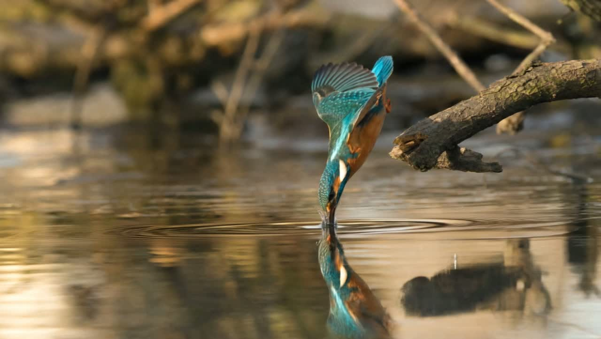
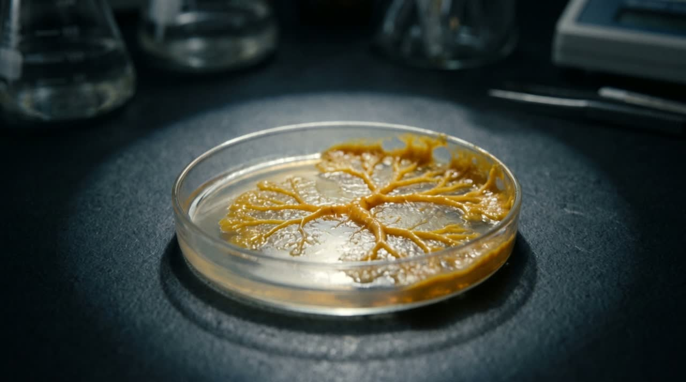
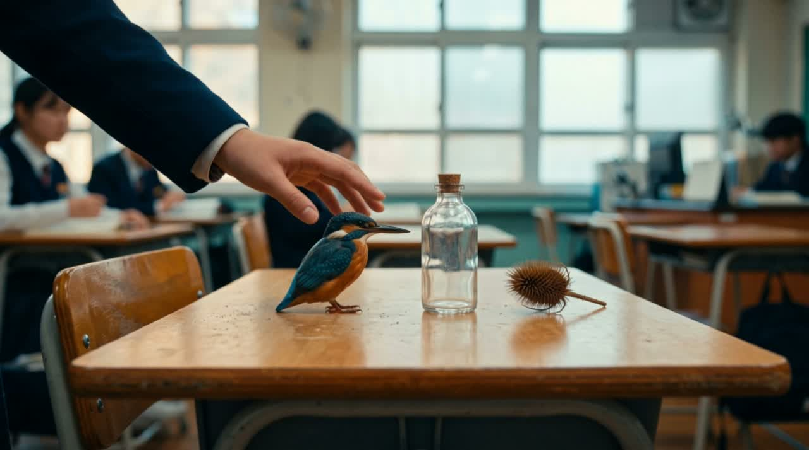

디자인씽킹 × 자연모사 · 2교시
지난 시간에 배운 렌즈를 꺼내서, 이번엔 여러분의 문제에 직접 써봅니다. KJ법 + FigJam으로 아이디어를 모으고 피칭까지.
오늘 순서 · 60분
Part 1 · 복습
보고, 원리만 뽑아내고, 다른 재료·다른 목적에 옮겨 심는 3단계
Define · Biologize · Discover · Abstract · Emulate · Evaluate
사람의 경험 · 38억 년 검증된 자연 · 빠르지만 검증이 필요한 AI
복습 퀴즈 1 · 객관식
정답 ② Biologize — “가벼운 텐트를 어떻게 지을까”를 “자연에서는 최소 재료로 어떻게 구조를 지탱할까”로 바꾸는 순간, 찾아볼 대상이 텐트 회사에서 지구의 모든 생물로 넓어집니다.
복습 퀴즈 2 · 객관식
정답 ② — 씨앗이든 나일론이든 똑같이 작동하는 원리만 남기고 재료와 형태는 지우는 것. 이게 추상화의 전부입니다.
복습 퀴즈 3 · 주관식
모범답안 방향
· 사람의 경험 — 쌓인 시간이 짧고(길어야 몇십 년) 관점이 좁을 수 있음
· 자연 — 38억 년 검증된 설계도지만, 사람 문제에 맞게 번역(Biologize)이 필요
· AI — 빠르지만 “다음 단어를 확률로 예측”할 뿐이라 자신감과 정확도가 무관, 늘 검증(Evaluate) 필요

복습 퀴즈 4 · 주관식 → 오늘의 과제
이 질문이 오늘 피칭 주제입니다. 지금부터 이 답을 팀과 함께 만들어봅니다.

Part 2 · 오늘의 활동
“새” 말고 “물총새가 물에 들어가는 순간의 부리 각도”처럼.
“뾰족하게 생겼다”가 아니라 “물살을 옆으로 밀지 않고 갈라낸다”.
뽑아낸 원리가 실제로 그 문제를 푸는 이유를 설명할 수 있어야 합니다.
완성도보다 순서를 제대로 밟았는지가 핵심입니다.
Part 3 · KJ법
일본 문화인류학자 가와키타 지로(川喜田二郎)가 현장 조사 데이터를 정리하려고 만든 방법. 그의 이니셜을 따서 KJ법이라 부릅니다.
핵심은 하나입니다 — 먼저 분류 기준을 정하지 않는다. 카드를 늘어놓고 “비슷한 것끼리” 모으다 보면, 기준이 나중에 저절로 드러납니다.
그룹에 이름을 붙이는 순간이 바로 추상화입니다. 개별 아이디어에서 공통 원리를 뽑아내는 것 — 벨크로를 만든 그 단계와 똑같습니다.
Part 3 · KJ법 4단계
한 장에 아이디어 하나. 짧은 문장으로. 말하지 말고 각자 조용히.
기준을 정하지 말고 그냥 “가까운 느낌”대로 옮겨 붙입니다.
이 덩어리를 한 문장으로 부르면? ← 여기가 추상화 지점.
그룹끼리 화살표로 잇고, 발표할 순서로 배치합니다.
Part 4 · FigJam
FigJam은 브라우저에서 여럿이 동시에 붙이는 온라인 화이트보드입니다. 설치 필요 없고, 링크만 있으면 바로 들어옵니다.
Part 4 · FigJam 실습 ①
Part 4 · FigJam 실습 ②
Part 5 · 실습
피칭 한 문장 틀 — “저희는 ○○ 문제를 풀려고 △△를 관찰했고, 거기서 □□ 원리를 뽑아 ◇◇에 적용했습니다.”
마무리
다음 시간엔 오늘 피칭한 아이디어 중 하나를 골라 실제로 만들어봅니다.